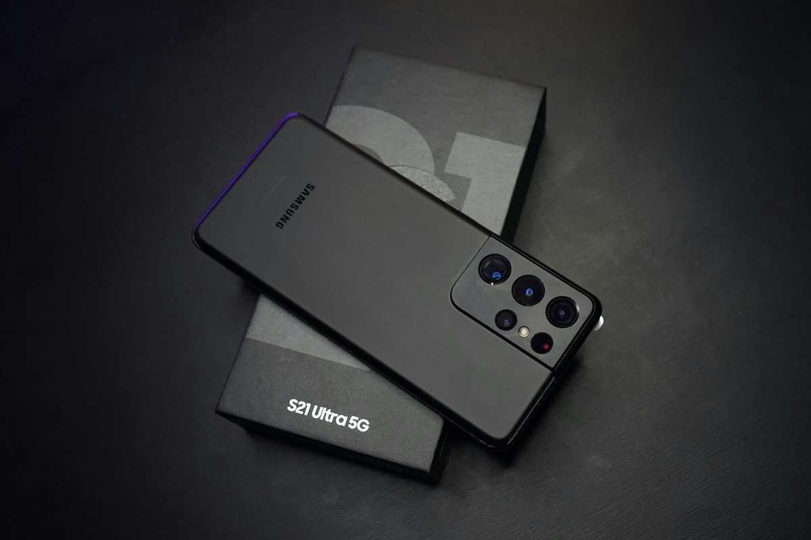

It All Started With My Attempt to Escape Google
I've been trying to de-Google my digital life for quite some time now. Not that I have anything particularly against Google, but I wanted to see how much of my daily digital life I could manage without depending on a single company for practically everything.
Email, maps, browsers, app stores, cloud storage, YouTube — you name it, and Google probably has a service for it.
Being a tech enthusiast, I thought experimenting with a custom Android ROM would be a good place to start. And that's how I ended up installing LineageOS on one of my spare Android phones.
For those unfamiliar with it, LineageOS is a free, open-source operating system based on Android. It gives you more control over your phone and, importantly for my experiment, doesn't require you to install Google's apps and services.
Perfect! Or so I thought.
De-Googling Is Easier Said Than Done
I installed LineageOS, configured the phone, and loaded it with all the applications I thought I would need. No Google apps, no Play Store, and no unnecessary software.
Everything looked great.
But I wasn't brave enough to immediately make it my primary phone. Instead, I started using it as a secondary device to see whether I could actually survive without Google's ecosystem.
It didn't take very long to discover a few problems.
First, there were certain applications I needed that weren't easily available without the Play Store. There are alternative app stores and ways to install Android applications, but not everything works as conveniently as you'd expect.
Then there was Google Maps.
I travel quite a bit, and reliable navigation is something I simply cannot compromise on. I experimented with alternative mapping applications, but in my experience, they weren't always as accurate or convenient for the places I needed to visit.
I could certainly live without Google Photos or Gmail, but Google Maps? That was a much harder relationship to end.
Eventually, I realized that while LineageOS was perfectly capable of running my phone, my everyday requirements still tied me to certain Google services.
So the experiment reached an awkward stage.
I had a perfectly functional Android phone running LineageOS, but I couldn't realistically use it as my primary device.
And I didn't want it to end up forgotten in a drawer.
Then My Four-Year-Old Daughter Gave Me an Idea
Around this time, my daughter was four years old.
I've always been quite particular about her exposure to mobile phones. I'm not particularly fond of handing children a smartphone just to keep them occupied, and I try to keep her away from mobile screens as much as possible.
But there's another side to this argument.
Her school had already introduced computers and basic technology as part of its curriculum. She was learning about digital devices, and I realized that keeping her completely away from technology wasn't necessarily the right approach either.
After all, she's growing up in a world where technology is everywhere. Eventually, she'll need to understand how to use it.
The question wasn't whether I should introduce her to technology.
The question was how I could introduce her to it without giving her unrestricted access to everything that comes with a smartphone.
And suddenly, my LineageOS experiment had a new purpose.
What if I turned this spare phone into a device specifically designed for her?
Not a regular smartphone with parental controls added afterward, but a phone with only the applications I actually wanted her to use.
No games. No Play Store. No web browser. No endless scrolling through random content.
Just a handful of applications serving very specific purposes.
Building Her First Android Phone
I already had LineageOS installed, so most of the hard work was done. All I needed to do was rethink the phone's purpose and configure it accordingly.
I wanted to keep things extremely simple.
1. Email: Her Own Digital Identity
My daughter already had her own email address, so I configured an email client on the phone. I believe I used Thunderbird.
The idea was to give her a basic introduction to email and gradually teach her how digital communication works.
2. WhatsApp: Staying Connected With Dad
WhatsApp was an obvious choice because that's how we communicate most of the time.
Whenever she wants to talk to me, she can use the phone. Rather than giving her a device purely for entertainment, I wanted it to serve a practical purpose.
Being able to communicate with her parents is a pretty good reason to have a phone.
3. LightTube: YouTube Without the Advertisements
This was an interesting one.
I wanted her to have access to certain YouTube videos, particularly when we're traveling. But I didn't want her to be bombarded with advertisements or spend hours jumping from one recommended video to another.
I also don't have a paid YouTube subscription.
So I installed LightTube, an open-source alternative that lets her watch videos without the usual advertisements.
The idea is simple: she watches videos that I choose for her, rather than endlessly exploring whatever YouTube decides to recommend next.
4. Spotify: Because Music Is Important!
Finally, I installed Spotify.
She loves listening to her favorite songs, and I wanted her to have access to music without having to use my phone every time.
Nothing particularly complicated here. Just her favorite music, whenever we allow her to listen.
And that's pretty much it. Four applications, each installed for a specific reason. No unnecessary software, no complicated interface, and no applications installed simply because everyone else has them.
What I Deliberately Left Out
| What Was Excluded | Why |
|---|---|
| Play Store | No unrestricted app installations |
| Web browser | No casual web browsing |
| Games | No mobile gaming rabbit hole |
| Google apps | No unnecessary Google services |
This is where LineageOS really started making sense for me.
When you buy a regular Android phone, it usually comes with an entire ecosystem of preinstalled applications. Even if you uninstall some of them, there's always something else waiting to grab your attention.
With this setup, I could start with a relatively clean operating system and install only what was necessary.
There was no Play Store tempting her to download games. No browser inviting her to explore random websites. And no Google applications that she had absolutely no reason to use.
Of course, simply removing applications doesn't make a phone completely childproof. Applications such as WhatsApp and Spotify still need supervision, and alternative video clients aren't necessarily parental-control tools.
But at least I had significantly reduced the number of things I needed to worry about.
More importantly, the phone wasn't designed to keep her entertained all day. It was designed to give her access to a few things when she actually needed them.
She Has a Phone, but That Doesn't Mean Unlimited Screen Time
There's an important distinction here.
My daughter is now the primary user of this phone, but that doesn't mean she carries it around all day or spends hours staring at it.
Quite the opposite.
Most of the time, the phone simply sits somewhere until she needs it.
If she wants to talk to me, she has WhatsApp. If we're traveling and I want her to watch something for a little while, she has LightTube. If she wants to listen to her favorite songs, there's Spotify.
At home, she generally watches television for an hour or two, so there's no real need for her to spend additional time on the phone.
And since there are no games or an app store, there's considerably less incentive for her to keep picking it up every few minutes.
I'm not trying to make her completely independent with technology at four years old. I'm simply giving her a controlled environment in which she can gradually become familiar with it.
An Unexpected Benefit: She's Learning Android
One thing I particularly like about this arrangement is that she's getting familiar with how a smartphone actually works.
She learns how to navigate between applications, recognize icons, use basic communication tools, and understand that different applications serve different purposes.
These might seem like very small things to us, but they're useful skills for a young child.
And when her friends eventually start talking about phones, applications, and technology, she won't be completely unfamiliar with the subject.
At the same time, I don't feel the need to introduce her to mobile games, social media, or unrestricted internet browsing simply because other children might have access to them.
There's plenty of time for all that later. For now, learning the basics is more than enough.
So, Did My De-Googling Experiment Fail?
Well, yes and no.
If the original objective was to completely replace my primary Android phone with LineageOS and eliminate my dependence on Google, I certainly haven't achieved that.
I still need Google Maps. I still have applications that depend on Google's ecosystem. And I haven't found a convenient alternative for every service I use.
But something interesting happened along the way.
The phone that couldn't meet all my requirements turned out to be perfectly suited to someone with much simpler requirements.
My daughter doesn't need Google Maps. She doesn't need dozens of applications or a browser. She doesn't need access to an app store.
She needs a way to communicate with her parents, watch a few selected videos, listen to music, and slowly learn how to use technology.
And LineageOS gives me a relatively clean foundation for exactly that.
I originally installed it to gain more control over my own digital life. I ended up using that control to build a simpler digital experience for my daughter.
Not quite the outcome I expected!
The Experiment Continues
I don't know how long this setup will remain sufficient.
As she grows older, her requirements will change. She'll probably need educational applications, a browser for schoolwork, and eventually access to other digital tools.
At that point, I'll have to reconsider what applications to install and what restrictions make sense for her age.
For now, though, this little experiment is working for us.
She has her own phone, she's learning to use Android, she can communicate with me, and she has access to a few things she enjoys.
And I have some peace of mind knowing that her phone isn't filled with games, advertisements, and dozens of applications competing for her attention.
I started this experiment because I wanted to use less Google. I continued it because I wanted my daughter to use technology more thoughtfully.
Sometimes a failed tech experiment finds a much better use case than the one you originally had in mind.
Let's see how this one evolves as she grows up.